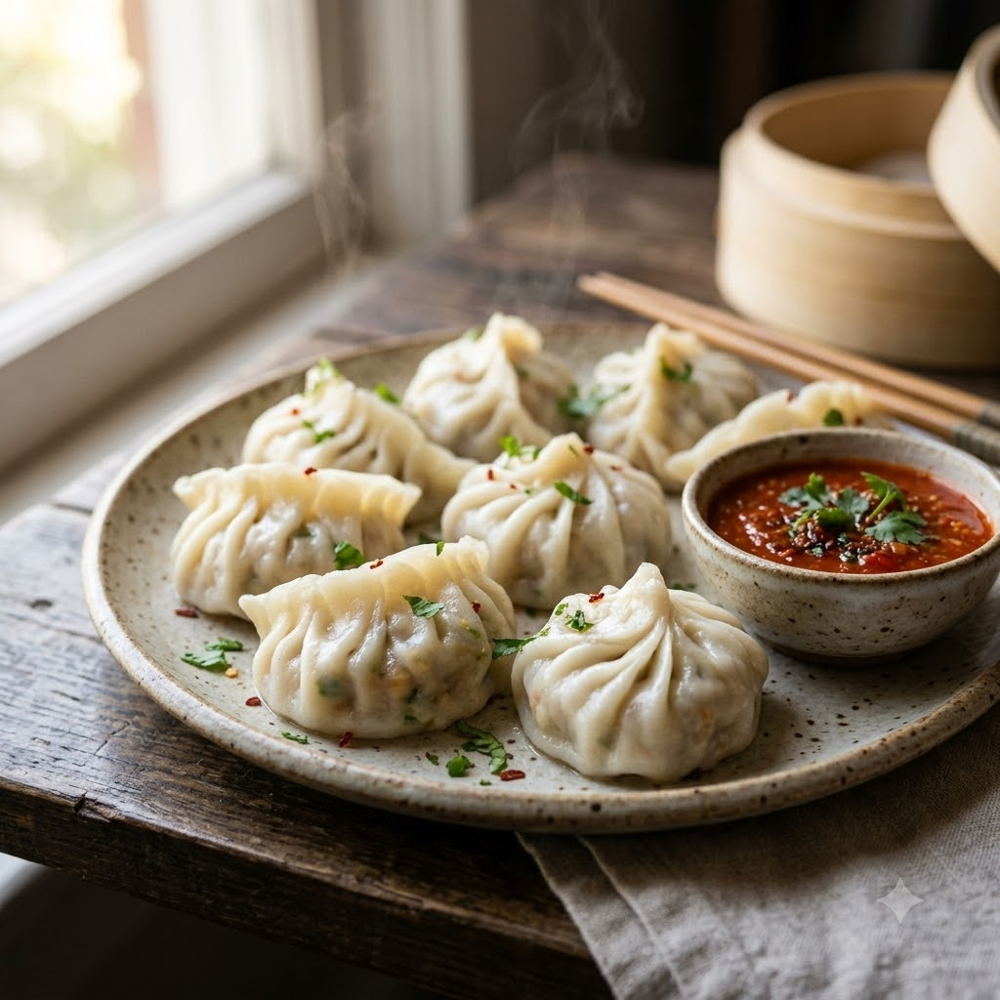

Steamed Vegetable Momos

Steamed Vegetable Momos
Chef Magic – Steam Auto 14 min makes ~15
Ingredients
- 15 momo wrappers
- 1 cup finely chopped cabbage, carrot, spring onion
- 1 tsp soy sauce
- 1/2 tsp ginger-garlic paste (adrak-lehsun paste)
- Salt & pepper to taste
- Water for the steamer base
Method
1Mix vegetables with soy sauce, ginger-garlic paste, salt and pepper for the filling.
2Fill wrappers with the mixture and pleat closed.
3Add water to the jar, fit the steamer tray with momos on top.
4Select Steam (100°C steam, paddle off) and cook for 14 minutes until wrappers turn glossy.